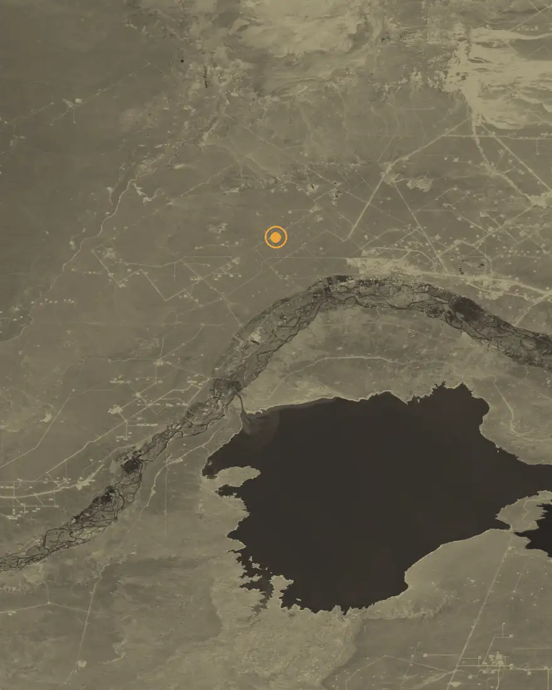
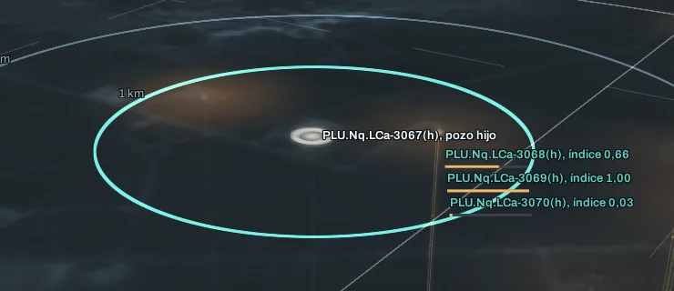
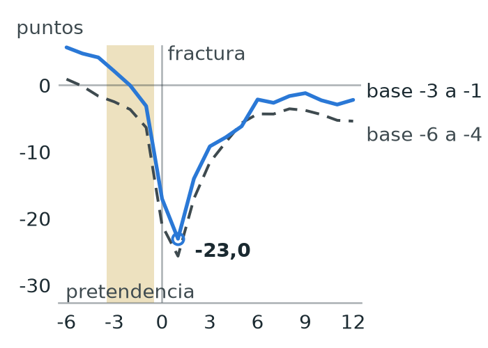
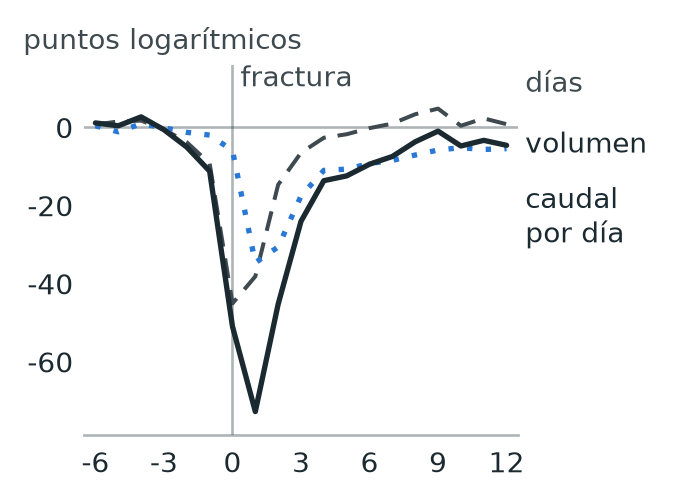

- ¿Los pozos vecinos rinden menos?
- ¿Puede salir sola, por cómo medimos?
- ¿Se pierde o se atrasa?
- ¿Por dónde pasa?
- ¿Se puede anticipar o planificar?
- ¿Pasa fuera de Vaca Muerta?

Vaca Muerta en datos
Cuando se fractura un pozo nuevo junto a pozos que ya producían, ¿los que ya producían rinden menos?
Resumen. Medimos qué les pasa a los pozos que ya producían (los padres) cuando se fractura un pozo nuevo (el hijo) a menos de 1 km. Usamos solo el dato público mensual de la Secretaría de Energía, en toda la cuenca: 2.094 eventos. Primero, el padre deja de producir días: el mes de la fractura, entre 79 y 88% de la caída son días sin producir: dos maneras de contar, sin y con los meses en que el padre estuvo cerrado todo el mes. Así se vería un cierre preventivo del operador. Después rinde menos por día. Un mes después de la fractura, los padres rinden entre 19 y 23 puntos menos que pozos de control a 2 a 5 km. Cerca de la mitad de la caída del volumen ya es menos petróleo por día producido. A los 6 meses la brecha baja a menos de 5 puntos, pero con medias de logaritmos el intervalo de la brecha del volumen todavía queda entero por debajo de cero: no está probado que el petróleo que falta llegue después. El agua sigue arriba, a cerca de la mitad del pico: el corte de agua del padre sube 13,8 puntos porcentuales en el mayor de los meses 0 y 1 (447 padres) y sigue arriba en los meses 6 a 12. La caída del petróleo es una huella medida, no una causa demostrada. La suba del agua es causal con supuestos nombrados; medida mes a mes (no como el mayor de dos meses), aguanta una cota de Rambachan y Roth del tamaño del mayor salto previo, sigue cuando la serie se corta en la segunda fractura a menos de 1 km, se repite en Colorado, donde no depende de un solo operador pero no es pareja entre ellos (con los pozos de PDC, el de más tratados, no se distingue de cero; Wyoming no permite probarla), y en Vaca Muerta depende de los pozos de YPF. El dato mensual no separa un cierre preventivo de un daño; los datos diarios y los registros de cierres de un operador sí. Una parte del estudio corre en su máquina sobre su dato mensual: la brecha del estudio de eventos, el modelo de dosis y, como lee el agua mensual opcional, el diseño del corte de agua. No parte la caída en días y caudal, y todavía no lee el diario ni los cierres.
Ver un caso en 3DLeer el informe para un operador
Paper en PDF (formato de paper): vaca-muerta-paper.pdf
- Hijo
- el pozo nuevo que se fractura.
- Padre (pozo vecino)
- un pozo que ya producía a menos de 1 km del hijo.
- Pozo de control
- un pozo a 2 a 5 km de un pozo hijo, para comparar.
- Puntos
- puntos porcentuales del caudal del propio pozo antes de la fractura: de 100 a 80 es una caída de 20 puntos.
- Diferido
- producción que el pozo entrega más tarde; no es producción perdida.
Datos, método y sellos
Datos. Usamos solo datos públicos de la Secretaría de Energía: la producción mensual de cada pozo no convencional, la fecha de cada fractura y las coordenadas de superficie. No hay producción diaria ni cierres declarados. Un evento es un pozo padre y el mes de fractura de su pozo hijo más cercano.
Método. Seguimos el caudal de cada pozo padre como fracción de su promedio de los 3 meses previos. Restamos la mediana de los pozos de control a la de los pozos padre, mes a mes. El intervalo de 95% se calcula por bloques de 5 km. Para las pruebas de robustez y las de otras cuencas, la regla de decisión se escribió antes del cálculo. Siguen seis preguntas: cada una sale de la duda que deja la anterior.
Cada pregunta lleva uno o más sellos. Sostiene: el dato lo muestra. Sostiene, con una brecha previa: los pozos padre ya rendían menos antes de la fractura, por eso damos un rango. No firme: el dato no alcanza para decidir. No predice: lo probamos y no funcionó. Sin muestra: faltaron casos. Se replica: el resultado aparece también en otra cuenca. Retirado: lo publicamos y no se confirmó. Pendiente: la prueba todavía no se puede evaluar.
Contains modified Copernicus Sentinel data 2025
¿Los pozos vecinos rinden menos?
sostiene, con una brecha previa
Sí. El mes de la fractura el padre pierde días de producción: entre 79 y 88% de la caída son días sin producir: dos maneras de contar, sin y con los meses en que el padre estuvo cerrado todo el mes. Un mes después rinde entre 19 y 23 puntos menos que pozos de control a 2 a 5 km. Cerca de la mitad de la caída del volumen ya es menos petróleo por día producido.
Es un rango porque los padres ya rendían un poco menos que los controles antes de la fractura. El 23 es el máximo y el 19 es lo que queda al descontar esa diferencia previa.

Ver los números


Mirá un caso en La cuenca mes a mes o en Vaca Muerta en 3D.
Un punto es un punto porcentual del caudal previo de cada pozo: pasar de 100 a 80 es una caída de 20 puntos. Son 2.094 eventos.
La brecha previa: antes de la fractura ya había una brecha de -2,5, -3,6 y -6,3 puntos en los meses -3, -2 y -1. Con datos mensuales no se separa una diferencia de nivel de los padres cercanos de un efecto anticipado, así que, contra este control, 23 es una cota superior (el máximo) y 19 el valor descontado; contra pozos de 5 a 10 km la brecha previa es otra.
El intervalo de 95% es el rango de valores que el dato deja abierto. Se calcula por bloques de 5 km (145 bloques). Para la brecha de -23,0 va de -30,0 a -17,0.
Con una brecha que ya estaba antes de la fractura, queda la sospecha de que el método invente diferencias entre padres y controles aunque no pase nada.
¿Puede salir sola, por cómo medimos?
sostiene
Probamos si el método produce una brecha sin causa. Con fechas de fractura falsas, corridas medio año y un año, la brecha del mes 1 va de -2,4 a 0,5 puntos y los intervalos incluyen el cero.
Con las fechas mezcladas entre pozos la brecha llega a -8,1 como máximo, contra -23,0 la real. Si plantamos a propósito una caída de -17,4 puntos en datos reales, el método la encuentra (-19,5).
Ver los números
Con las fechas permutadas entre hijos del mismo año va de -8,1 a -4,9, contra -23,0 la real. Plantamos una caída de unos -17,4 puntos sobre datos reales y el estimador la devuelve como -19,5, con la brecha residual de -2,2 del mundo nulo; se cumplen 5 de las 5 reglas escritas antes de correr, y la de falsos positivos da 2 de 30 mundos (7%).
Dentro del mes, la brecha del mes 0 cambia -2,1 puntos por cada 0,1 de fracción del mes posterior al inicio de la fractura (IC 95%: -3,3 a -0,8). Esa pendiente no sobrevive a su placebo en la prueba del día de inicio, que se fijó antes de correr: pozos de control, una fecha falsa y los días sorteados la rompen, así que no la leemos como dosis.
Con fechas falsas de fractura, la brecha no se reproduce de forma consistente: una da cero y otra tiene el signo contrario.
Que la brecha sea real no dice cuánto cuesta: esa producción puede perderse o llegar más tarde.
¿Se pierde o se atrasa?
sostiene
En el mes 6 la brecha del índice es de -2,1 puntos: menos de 5 puntos, pero no cero. Con medias de logaritmos, el intervalo de la brecha del volumen todavía queda entero por debajo de cero: no está probado que el petróleo que falta llegue después.
El agua sigue arriba. El corte de agua del padre sube 13,8 puntos porcentuales en el mayor de los meses 0 y 1 (447 padres) y en los meses 6 a 12 sigue 10,9 puntos arriba (media de cada mes; regla fijada después de ver D2). Es la única afirmación causal, con supuestos nombrados; en Vaca Muerta depende de los pozos de YPF y en Colorado no depende de un solo operador, aunque con los pozos de PDC solos no se distingue de cero. Medida mes a mes (no como el mayor de dos meses), aguanta la cota de Rambachan y Roth con Mbar = 1 (después de la fractura el sesgo puede saltar de un mes al siguiente tanto como el mayor salto previo), y con la serie cortada en la segunda fractura a menos de 1 km los meses 6 a 12 siguen 10,5 puntos arriba (IC 6,8 a 15,4).
El volumen que falta en los meses 0 a 6 (el diferido) va de 6,4 a 11,4 millones de barriles: es una brecha descriptiva, no un efecto causal, y no se sabe si llega después. El rango depende de cómo se cuentan los eventos que se superponen y de si se descuenta la brecha previa.
Barriles que llegan tarde: mirá un caso realCuánto produce menos un pozo vecino, cuándo lo recupera y cuánto cuesta esperarlo, con el precio que elegís vos.
Ver los números
Contra un control de la misma edad, el volumen que falta en los meses 0 a 6 (el diferido) va de 6,4 a 11,4 millones de barriles: es una brecha descriptiva, no un efecto causal, y no se sabe si llega después. El rango depende de cómo se cuente: el extremo alto suma cada evento por separado y el bajo cuenta cada mes de un padre una sola vez.
Cómo se cuenta el diferido
- Por evento: en YPF, 5.969 barriles por fractura (1.338 eventos); en los demás operadores, 4.576 por fractura (756 eventos). Es un promedio por fractura, no la parte de cada operador en el total: YPF tiene la mayoría de los eventos, y esa parte no dice qué operador pierde más.
- Por padre: cada padre se cuenta una sola vez, aunque tenga varios eventos; la cifra de un padre típico está en el informe.
- Total de la cuenca: el rango de arriba, de los meses 0 a 6.
A los 24 meses, el padre típico no muestra pérdida acumulada: el dato no la distingue de cero. Eso no prueba que todo vuelva. Por evento, la mediana es -954 barriles y su intervalo de 95% incluye el cero.
Un promedio no dice a qué padres les toca: ¿hay una posición respecto del hijo que explique quién pierde más?
¿Por dónde pasa?
sostiene
Con las trayectorias publicadas de las ramas, comparamos dos posiciones del pozo padre: al costado de la rama del pozo hijo o en su punta. Al mes 1, la brecha del costado contra la punta es de -28,0 puntos.
Una primera respuesta, una dirección este-oeste, se retiró: está en la pregunta siguiente.
Ver los números
El contraste de -28,0 puntos sale de 1.201 costados y 915 puntas (IC 95% por bloques de 5 km: -35,9 a -19,7). La huella además tiene alcance: la brecha del mes 1 es de -50,3 puntos a menos de 300 m entre ramas y de -1,5 de 1.000 a 2.000 m, sobre 10.173 eventos.
La muestra es sobre todo de hijos fracturados de 2016 a 2023: las trayectorias cubren el 86% de esos hijos, pero el 39% de los de 2024 y el 25% de los de 2025.
La prueba completa: el mecanismo por la geometría de las ramas
Una huella con forma y alcance parece algo que se puede usar: ¿se puede anticipar qué pozo la va a sufrir, o planificar las fracturas para evitarla?
¿Se puede anticipar o planificar?
no prediceno predice el riesgono firmesin muestra
La huella es real en promedio y ruidosa en cada evento, y por eso nada de lo que probamos alcanza para decidir sobre un pozo.
Resultados negativos y uno retirado
- Una dirección única de la caída, este-oeste: retirado. La publicamos como hallazgo y la retiramos. No se distingue de la dirección del esfuerzo de la roca ni de cómo se ubican los pozos. Hoy es una descripción de los pozos, no un resultado.
- Predecir el costo de cada evento: el modelo anda peor que usar el promedio de la zona.
- Predecir qué pozo recibe un golpe de fractura fuerte: acierta algo mejor que el azar, pero no mejora de forma segura a la tasa histórica de la zona.
- Ver si un trabajo más grande en el hijo (más arena o más presión) agranda la caída: con estos casos, un efecto chico pasaría inadvertido.
- Ver si un hijo rinde menos junto a pozos ya agotados: la prueba de control dio un efecto donde no debía, así que no se puede leer.
- Planificar el calendario de fracturas o agrupar hijos con un mismo padre: pedíamos 100 y 150 casos, y hay 81 y 87.
Ver los números
Eje de mayor merma: 93 grados, este-oeste (IC de 70 a 123). No se separa del SHmax publicado (la dirección del esfuerzo máximo de la roca), de 67,5 grados, ni de cómo se ubican los pads y las ramas. El eje de los eventos viejos (92 grados) no predice mejor a los nuevos (89) que uno al azar.
El modelo de costo predice peor que la media del área (R2 fuera de muestra de -0,18 contra -0,03). El modelo del riesgo de un golpe de fractura fuerte (la caída de un pozo vecino mientras se fractura el nuevo), probado hacia adelante sobre 492 eventos, tiene un AUC de 0,67 que pasa el umbral, pero su habilidad de Brier de 0,09 tiene un intervalo de -0,04 a 0,21 que incluye el cero. Con la geometría de las ramas, el menor efecto de dosis detectable es de 0,34 desvíos, contra 0,22 de la muestra completa: no da más potencia. El lado del hijo da -0,2 bbl por metro de rama (IC -12,6 a 12,2), pero su control negativo da 8,9 y no es nulo, así que no se lee. Y los dos intentos de planificar pedían más datos de los que hay: el calendario de golpes, 100 eventos aislados y hay 81; agrupar hijos con un mismo padre, 150 padres y 400 meses de golpe y hay 87 y 197.
Todo esto es en una sola cuenca: ¿la huella es una propiedad de Vaca Muerta o de cómo se ve el dato de acá?
¿Pasa fuera de Vaca Muerta?
se replica en 1 de 2 cuencas
Corrimos los mismos estimadores en otras dos cuencas, con una regla escrita antes de correr el cálculo.
Ver los números
En la cuenca DJ de Colorado se replica: -19,9 puntos al mes 1 (IC 95% por bloques de 5 km: -27,5 a -14,8), con una brecha previa de -6,9 en el mes -1. Ahí, al mes 6, la brecha no se cierra del todo (-5,9). En Wyoming no: -2,5 puntos (IC -5,5 a 2,2), y su brecha previa, de -11,9, es mayor que la del mes 1. Se publican las dos. En Wyoming la regla se escribió antes de bajar sus datos. Con dos cuencas no podemos decir si la diferencia es propia de cada cuenca o si es ruido del dato: no hay estimación conjunta.
Limitaciones
Con un diseño causal, bajo tendencias paralelas, hay un solo resultado: el corte de agua del pozo padre sube 13,8 puntos porcentuales en el mayor de los meses 0 y 1 (447 padres). Depende de los pozos de YPF; sin ellos, el dato no lo separa de cero.
No sabemos si la caída de petróleo es una causa. Es una huella medida contra un control (la diferencia que medimos), no una causa demostrada: con datos mensuales y declarados por las operadoras, un cierre preventivo (el operador frena el pozo padre antes de la fractura para protegerlo) se ve igual que un daño por interferencia. Con controles que van a recibir un hijo más tarde, la caída del mes 1 deja de distinguirse de cero si el sesgo salta de un mes al siguiente apenas 0,20 veces el mayor salto previo. Tampoco sabemos si sirve para anticipar un pozo en particular, ni si vale fuera de Vaca Muerta más allá de Colorado.
Qué sigue
Prueba prospectiva: sin muestra
Una prueba sigue abierta. El 2026-11-18, con datos hasta 2026-09, escribimos una predicción: una brecha de -22,9 puntos al mes 1 (intervalo predicho: -28,7 a -16,8) y el cierre al mes 6, en eventos cuyos meses siguientes todavía no estaban publicados. Cada publicación nueva la puntúa de nuevo. Para decidir hacen falta 100 eventos cercanos y 100 controles con el mes medido. Con los datos hasta 2026-10 se puntuó y quedó sin muestra: los casos con el mes medido todavía no llegan a los mínimos.
La prueba completa: la prueba prospectiva
Qué lo resolvería
- Producción diaria, que separaría un cierre de un golpe dentro del mes.
- Cierres declarados por las operadoras, que permitirían descartar los preventivos.
- Trayectorias de los hijos recientes, que hoy cubren el 39% de los de 2024 y el 25% de los de 2025.
- Presión de fondo y de reservorio, y el nivel al que aterriza cada pozo: el dato público no los trae.
- Distinguir un nivel de un efecto anticipado: el rango de 19 a 23 quedaría en un solo número.